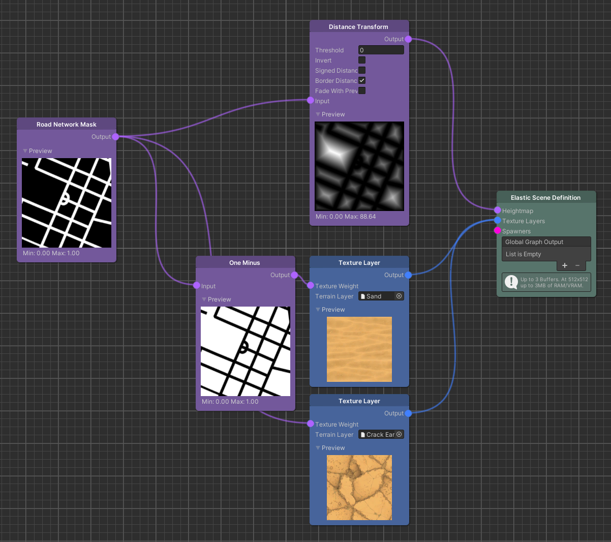
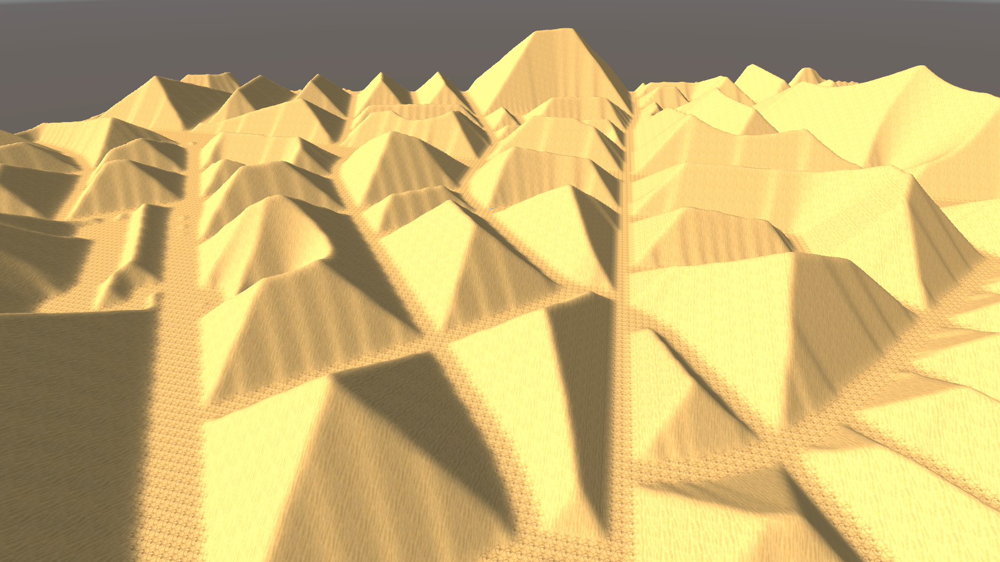
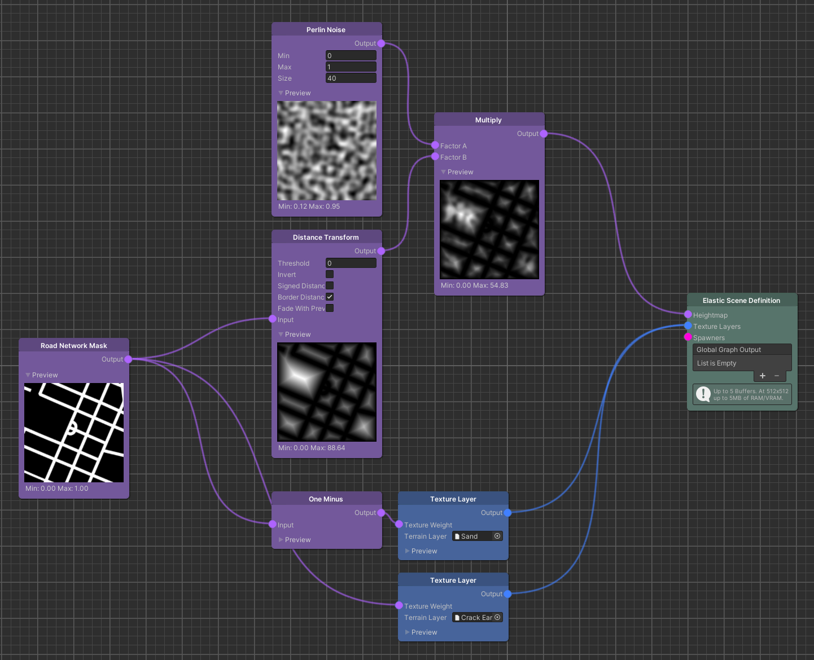
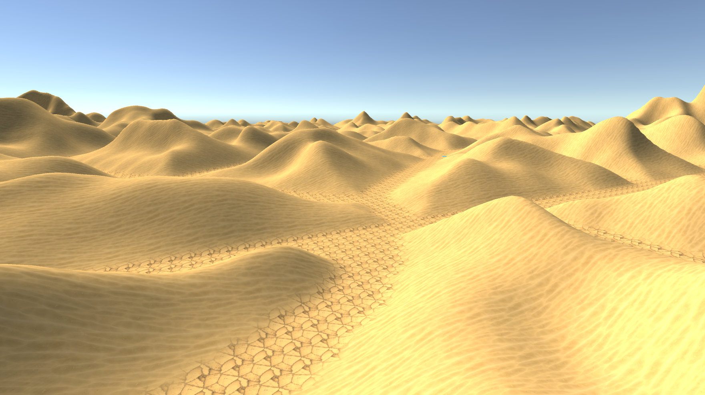

Distances & Heights
For elastic content creation it is important that you assemble a proper correlation between real-world localization data and environment features of the virtual world. While there are many ways to design such environment features, there are a handful of principles in the Elastic Graph system that will make it inherently easier to assemble said correlations towards real-world data.
Two major properties of every elastic environment is the distance towards the road a player is driving on and a height
that can be derived from such a distance. The essential principle behind this idea is that an elastic environment should
evolve around the road network, so that the player does not collide with anything, and it should do this in a way so
that the content creator has a certain amount of control over the procedural composition, i.e. the heightmap, of the
environment.
In other words, we compute a heightmap over a certain distance.
Now, to incorporate this principle we introduce the Distance Transform node.


As seen in the image above, applying a Distance Transform to a Road Network Mask results in a terrain with a lot of pyramid-like shapes. That's due to how the Distance Transform works. Per output pixel, it effectively computes the distance to the closest non-zero pixel that belongs to the input map, which in this case is the road mask. And since the input map has a bunch of square areas that are enclosed by roads, the distance increases towards the center of these areas, ultimately resulting in these pyramid-like shapes.
Note
Generally speaking, the value of each pixel is the distance measured between its position and the closest pixel over a threshold in the input image.
That is, the two dimensional euclidean distance measured in meters.
This is obviously a rather boring composition for a terrain, so let's see what happens when we multiply these distances with a Perlin Noise node.


Already the resulting terrain has a much more natural appearance with great variation. Hill shapes are defined by the noise while their height increases with the distance to the road.
Noise
So what did we actually do to the values of the Distance Transform?
To understand this, it is important to understand the idea of Noise as well. In the case above, values from a 2D Perlin
noise are sampled along the generation bounds. Noise, as any other signal, is always defined by three properties:
Frequency, amplitude and time.

Since a Map is effectively an area constrained by the generation bounds, a noise value for each point (or pixel) in this area is needed. This is achieved by sampling the 2D noise signal along the vertical and horizontal coordinates of the map. The coordinates are in this case a point in time of the noise signal. The frequency of the noise signal is defined as 1 / Size, while the Size parameter, in a scientific context, would be referred to as the period of the signal.
Tip
Use the Size parameter to adjust the frequency of the noise signal.
Effectively this will capture a broader area of the 2D Perlin noise function.
Finally, the output the Perlin Noise node generates are the amplitudes of the noise signal. These are the values that we multiply with the output of the Distance Transform node to introduce more detail, more variation to the terrain shapes.
Data Modifiers
Node types of the Elastic SDK that are used to generate and introduce synthetic or real-world data, such as Map or Pose nodes, are divided into Sources and Modifiers. <br> While Sources represent an initial set of data, Modifiers are used to alter this data.
For Map nodes, two basic Modifiers are the Add and Multiply nodes. In general, Modifiers will execute a sequence of operations on each data point of the input maps. For Add and Multiply, it is a simple addition and a multiplication. This means for example every point of data at a specific location on one Map will be added to a value at the same location on the second Map. The result is then output in a new Map.
As we did for the noise example, we can also assume for each Map that we are working with signals. It might be helpful to first think in terms of 1D signals similar to audio, that represent a slice of our map. To visualize an example of the effects of a Multiply or Add operation on such a signal, we have an interactive graph below. The two input curves represent the initial signals (or map slices). Use the knobs on these curves to alter the values the operations execute on. You can observe how the amplitudes of the output signals, i.e. the knobs on the output curves, change.
Tip
The top chart is interactive!
Use the knobs on each curve to adjust the input values for the operations rendered in the bottom chart and observe the resulting curve shapes.
Note
The vertical axis range has changed on the output chart to put the maximum values into perspective.
While these curves are a visual representation of a 1D signal, it should give a good indication how shapes evolve from
your 2D Maps as well. Remember the Map slice metaphor.
Understanding the principle of combining Maps with one
another is essential for the usage of the Elastic Graph system, so make sure to play around with different input values.